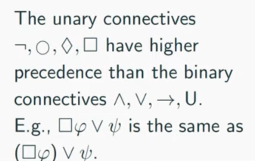

please modify the following
[TOC]
- Title: LTL2Action: Generalizing LTL Instructions for Multi-Task RL
- Author: Pashootan Vaezipoor et. al.
- Publish Year: 2021
- Review Date: March 2022
Summary of paper
Motivation
they addressed the problem of teaching a deep reinforcement learning agent to follow instructions in multi-task environments. Instructions are expressed in a well-known formal language – linear temporal logic (LTL)
Limitation of the vanilla MDP
temporal constraints cannot be expressed as rewards in MDP setting and thus modular policy and other stuffs are not able to obtain maximum rewards.

Contribution
- proposed a novel approach for teaching RL agents to follow LTL instructions that has theoretical advantages over other methods
- encode LTL instruction via a neural architecture equipped with LTL progression (GNN)
- use environment-agnostic LTL pre-training
From LTL Instructions to Rewards
we have a labelling function L(s,a) assigns truth values to the propositions in P given the current state s (or state history) of the environment and the action $a \in A$ (also known as event detector)
Formally, given an LTL instruction $\varphi$ over $P$ and a labelling function $L : S \times A \rarr 2^P$

it just means that if all the trajectory follows the instruction, then we can have such reward
Some key terms
Multitask learning
in order to instruct RL using language, the first step is to agree upon a common vocabulary between different tasks.
Propositional symbols
propositional logic -> deals with propositions (which can be true or false) and relations between propositions,
proposition -> is the meaning of a declarative sentence. “meaning” is understood to be a non-linguistic entity which is shared by all sentences with the same meaning.
Linear Temporal Logic

definition of formula: formula, is a finite sequence of symbols from a given alphabet that is part of a formal language

the unary connectives have higher precedence than the binary connectives


A until B means A will hold continuously until B comes up and A will stop to hold
Example


“infinitely often” means it happens multiple times


Lift Example

Formal semantics


Minigrid example

Let’s say that the set of propositions $P$ includes $R, G$ and $B$, which are true iff the agent is standing on red/green/blue square (respectively) in the current time step

How to analyse the LTL formula and how to make the progress Markovian again
what I mean is to check if LTL formula is satisfied or not
solution: LTL progression


we can see the progression will decompose the instructions gradually.
i.e., Progress towards completion of the task is reflected in diminished remaining instructions.

all in all, as we consume the instruction $\varphi$ , we can then neglect the trajectory and make the policy Markovian

check the transition distribution definition


Minor comments
check LTL introduction videos
https://www.youtube.com/watch?v=a9fo3dUly8A&list=PLMBx8HjvK7672qEl6bdnXdzYEbLP_lWPw
Potential future work
I can see that LTL is also care about the low level instructions rather than strategies.